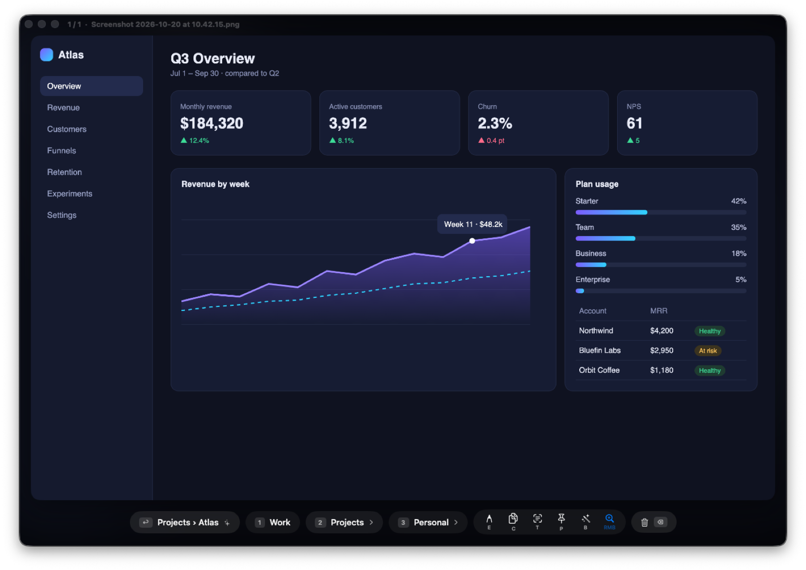
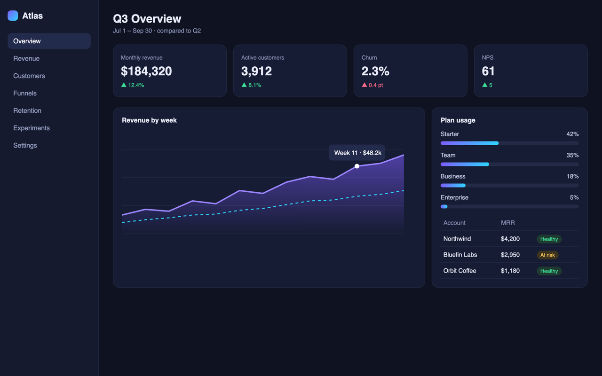
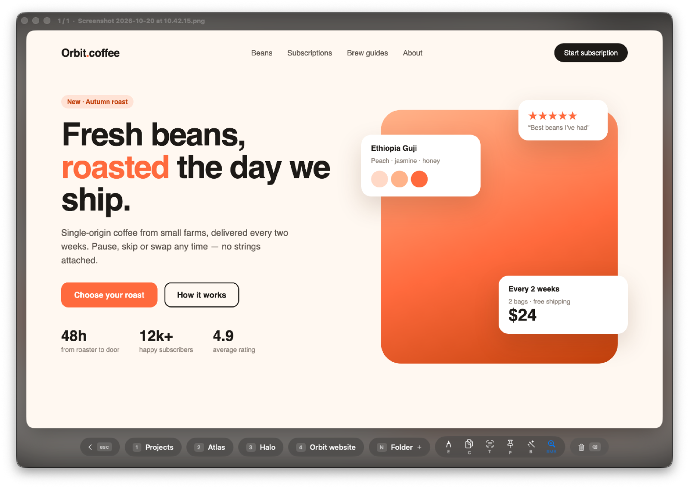
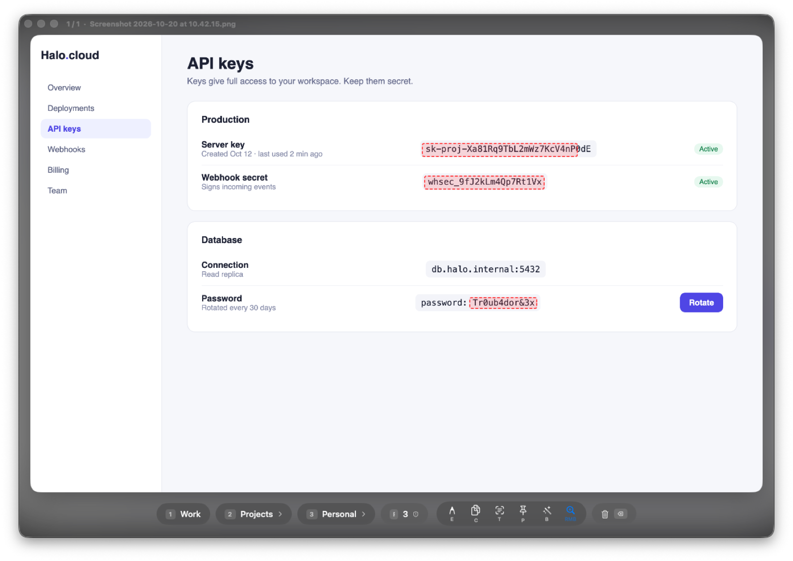
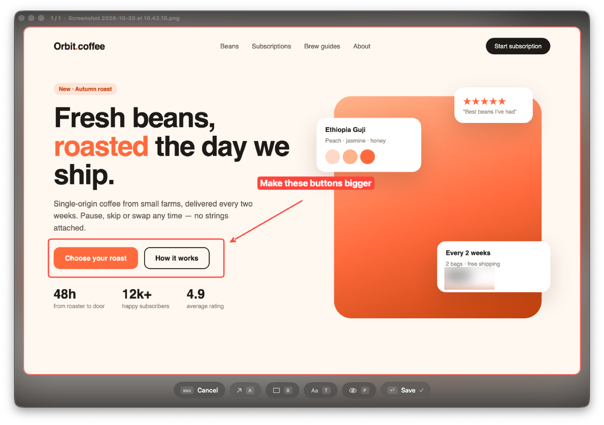
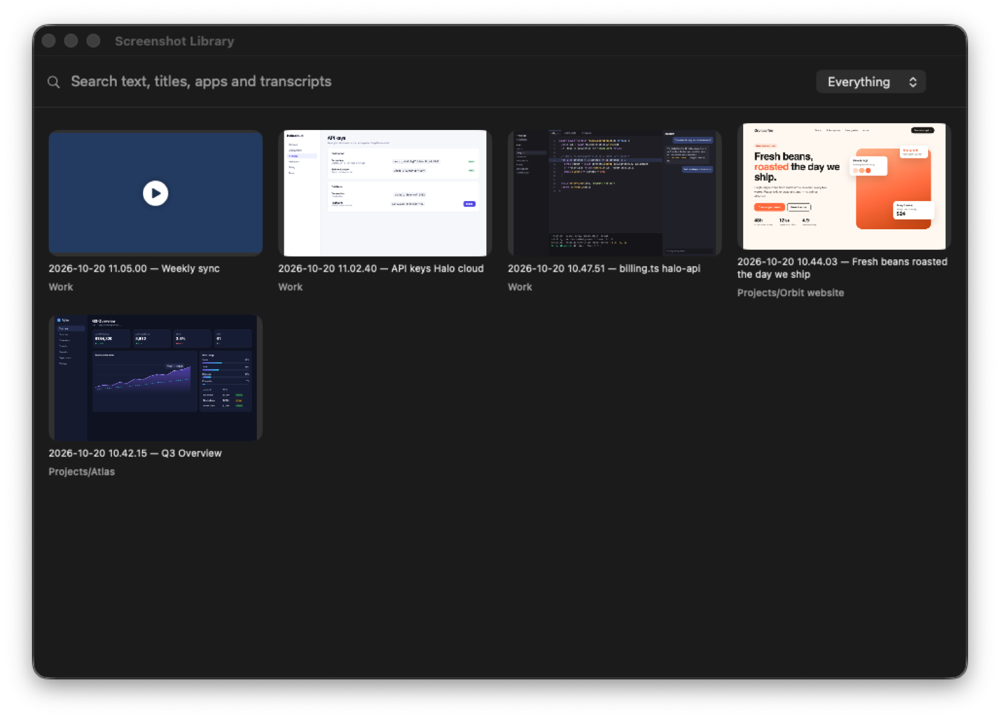
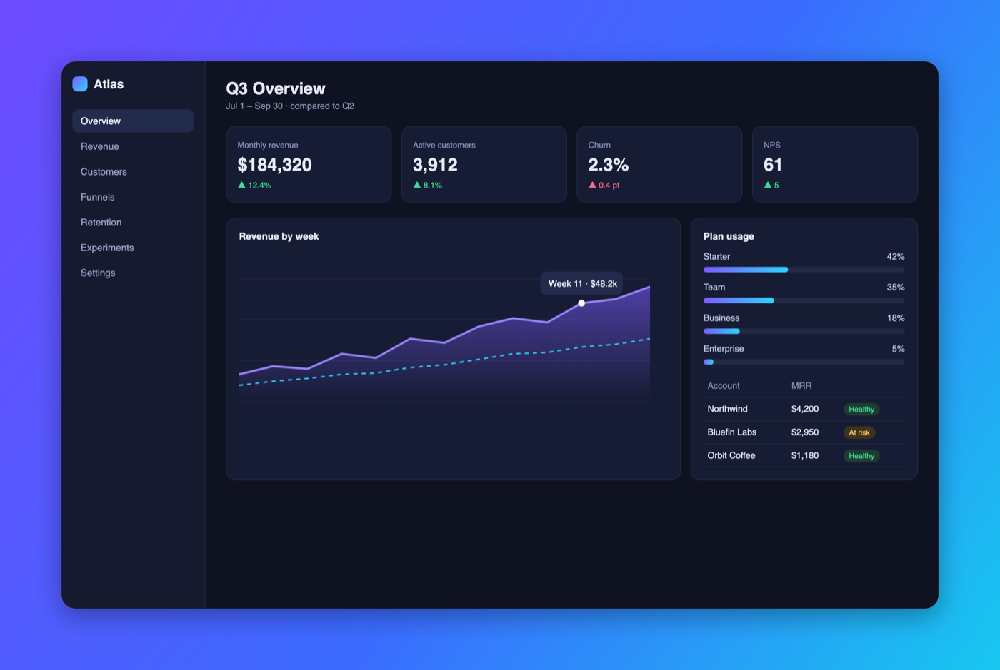

Every screenshot, filed in one keystroke.
Take a screenshot and Screenshooter asks one question: where does it go? It suggests the folder, names the file, blurs the passwords and compresses it — you press one key.
brew install --cask lozhka13/tap/screenshooter
Free · Open source (MIT) · Version 2.1.0 · Nothing leaves your Mac

What is Screenshooter?
Screenshooter is a free Mac app that files every screenshot and screen recording into the right folder with one keystroke. It suggests the folder, renames the file, blurs passwords, compresses it and lets Claude search everything you captured.
How it works
- Take a screenshot with ⌘⇧3, ⌘⇧4 or ⌘⇧5, as always.
- A sorting window opens with a large preview and a suggested folder.
- Press one key: Return for the suggestion, 1–9 for a category.
- It's filed, renamed after what's on screen and compressed in the background.
- Keystrokes to file a screenshot
- 1
- Categories on number keys
- up to 9
- Screenshots or audio uploaded
- 0
- Screen recordings after compression
- ~5× smaller
- Loupe magnification
- 2.5×
- Price
- Free
- Requires
- macOS 26, Apple Silicon
- Latest version
- 2.1.0 · Oct 20, 2026
Take a screenshot of this window.
Press S or the button below, then file it with ↩ or 1–3. Your Mac keeps ⌘⇧4 for itself, so a browser never sees it — in the real app that shortcut is all you need.

68 files called “Screenshot” on your Desktop.
You took each one for a reason: a bug for a colleague, a design to keep, a receipt. A week later they are a wall of timestamps, and the one you need is somewhere in the middle. Screenshooter sorts them while you still remember why you took them.
It learns where things go.
Screenshooter notes the app, the browser tab and the text of every screenshot you file. The next screenshot of the same dashboard, chat or document comes with a suggestion, and ↩ files it.
- 1 Pick a category; with subfolders, 2…9 pick one inside.
- N Create a folder without leaving the keyboard.
- ⌘Z Changed your mind? Undo the last move.

Catches the password before you share it.
Every screenshot is read on your Mac. API keys, tokens, passwords and card numbers get a red frame, and R pixelates them in the file. No more cropping a Slack message because a secret slipped into the corner.

Point at the problem. Skip the second app.
Press E for arrows, boxes, labels and blur, drawn straight onto the screenshot. Save with ↩; the original waits in the Trash in case you want it back.

Search by what was on the screen.
Remember the error message but not the date? ⌃⌥⌘F opens the library and finds screenshots by their text, page title, app and file name, and recordings by what was said.

Built for the five seconds after the shot.
Readable names
2026-10-20 10.42.15 — Q3 Overview.png instead of a timestamp, from the page title or heading.
Copy text
T puts every word on the screenshot on your clipboard, in English, Russian and more.
Pin on top
P floats the screenshot above your windows while you copy numbers from it.
Ready for slides
B adds a gradient background, rounded corners and a shadow.
Loupe
Hover to magnify 2.5×; tell two similar screenshots apart without opening them.
Smaller files
PNG compressed losslessly, recordings to H.265 — about five times smaller.

Record the call. Read it later.
Press ⌃⌥⌘R to record the screen with system audio and your microphone. When you stop, the recording is sorted like any screenshot and transcribed on your Mac.
- Hello, team.
- We agreed to ship version 2 on Friday.
- Anna prepares the design and Karen owns the release.
- Billing retries stay at three attempts.
- Next check-in is Thursday at ten.
What gets recorded
- Audio Your colleagues from Slack, Zoom or Meet, plus your own voice.
- Screen The display under the pointer, without Screenshooter's own windows.
- Text A timestamped transcript next to the video, ready for notes or Claude.
- GIF G turns a short recording into a GIF for a bug report.
Ask Claude about anything you captured.
A built-in MCP server lets Claude search your screenshots, look at them, file them and read your call transcripts. It only sees your Screenshots folder.
search_screenshotsget_screenshotlatest_screenshotmove_screenshotlist_recordingsget_transcript
Anna — final design. Karen — release. Next check-in Thursday, 10:00.
Screenshooter vs. the macOS screenshot tool
macOS takes great screenshots. Screenshooter picks up where it stops: after the shot.
| What you need | macOS screenshots | Screenshooter |
|---|---|---|
| Choose a folder for each screenshot | One fixed folder | One key, with suggestions |
| Meaningful file names | Date and time | Page title or heading |
| Find a screenshot by its text | Spotlight, sometimes | Library search, ⌃⌥⌘F |
| Spot passwords before sharing | No | Framed in red, blurred with R |
| Arrows, boxes, text | Markup in Preview | In the sorting window, E |
| Record call audio | Microphone only | System audio and microphone |
| Transcript of a recording | No | On device, .txt next to the video |
| Ask an AI assistant about captures | No | MCP server for Claude |
The whole app fits on twelve keys.
Your screenshots stay yours.
Clear the Desktop today.
Install Screenshooter, take a screenshot, press one key. That's the whole setup.
Requires macOS 26 Tahoe on Apple Silicon. Free and open source (MIT).
Questions people ask
How do I organize screenshots on a Mac automatically?
Install Screenshooter and keep taking screenshots with ⌘⇧3, ⌘⇧4 or ⌘⇧5. Each new screenshot opens a sorting window: press Return to accept the suggested folder or 1–9 to pick a category. Files land in plain folders inside ~/Screenshots.
How do I blur a password in a screenshot on a Mac?
Screenshooter reads every screenshot on your Mac and frames passwords, API keys, tokens and card numbers in red. Press R to pixelate them in the file, or press E and use the blur tool for anything else.
How do I search for text inside my screenshots?
Press ⌃⌥⌘F to open the Screenshooter library and type any word that was on the screen, in a page title or in an app name. Recognized text is stored with each file, so search is instant and offline.
How do I record a call on a Mac with both voices and get a transcript?
Press ⌃⌥⌘R in Screenshooter to record the screen with system audio and your microphone, then press it again to stop. The recording is transcribed on your Mac into a timestamped .txt file next to the video.
Does Screenshooter upload my screenshots?
No. Text recognition, transcription and smart names run on your Mac. The only network request is a daily update check against GitHub, which you can turn off.
Can Claude read my screenshots and call transcripts?
Yes, if you connect Screenshooter's built-in MCP server. Claude can then search, view and file screenshots and read transcripts, but only inside your ~/Screenshots folder.
Is Screenshooter free?
Yes. Screenshooter is free and open source under the MIT license. It needs macOS 26 Tahoe on an Apple Silicon Mac.